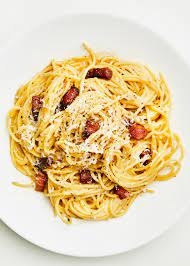

Home
Pasta Carbonara

Description
This is the recipe of Pasta Carbonara after multiple trial and error. To be honest I used to prepare it with cream but this has changed since I moved in with Angelo, from Palermo.
It is the mixtue of the eggs and the cheese that creates this creamy textue and cream is not needed.
The following recipe is what I consider the best carbonara recipe and I am a fan of Pasta Carbonara. It takes only 20mn to prepare. I hope you guys enjoy it :)
Ingredients (for 1 person)
- 170g of Spaghetti
- 2 Eggs
- 200g of lardons or pancetta
- 50g of Pecorino or Parmigiano Reggiano
Optional
- One onion
- Fresh basil or chive
Steps
- Boil water and cook the pasta "Al Dente".
- Meanwhile, cook the lardons (with the onions) in a pan for 5-10 minutes on medium heat.
- Take one egg white and two egg yoks and mix it in a large bowl. Add the grated cheese and mix it until you get a creamy texture. Add salt and pepper to taste.
- Drain the pasta and put them in the pan with the lardons. Turn the heat off and pour the cheese egg mixture into the pan. Stir the pasta.
- Add some fresh chive/basil, serve and enjoy 🍝